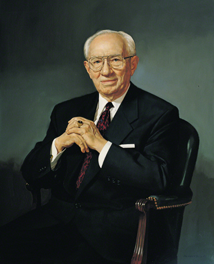

Date of Birth: 23 December 1805 Place of Birth: Vermont
Date of Birth: 1 June 1801 Place of Birth: Vermont

Date of Birth: 1 November 1808 Place of Birth: England

Date of Birth: 1 March 1807 Place of Birth: Connecticut

Date of Birth: 3 April 1814 Place of Birth: Vermont

Date of Birth: 1 November 1838 Place of Birth: Utah

Date of Birth: 22 November 1856 Place of Birth: Utah
Date of Birth: 4 April 1870 Place of Birth: Utah

Date of Birth: 8 September 1873 Place of Birth: Utah
Date of Birth: 19 July 1876 Place of Birth: Idaho

Date of Birth: 28 March 1899 Place of Birth: Utah
Date of Birth: 28 March 1895 Place of Birth: Arizona
Date of Birth: 4 August 1899 Place of Birth: Utah
Date of Birth: 14 November 1907 Place of Birth: Idaho
Date of Birth: 23 June 1910 Place of Birth: Utah
Date of Birth: 21 August 1927 Place of Birth: Utah
Date of Birth: 9 September 1924 Place of Birth: Utah